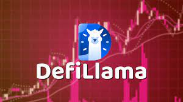

Swap Llama in the Web3 Gaming Ecosystem: More Than Just Numbers
Okay, confession time. I initially scoffed at Defi Llama. "Another crypto dashboard? Seriously?" I muttered, scrolling past its sleek interface, already overloaded with blockchain jargon and cryptic charts. I'm a gamer, first and foremost – think more late-night raids in WoW than meticulously tracking TVL. But then something shifted. I started noticing Defi Llama cropping up everywhere in the Web3 gaming space, and that, my friends, piqued my curiosity.
Why is a seemingly simple DeFi aggregator suddenly so crucial in the wild west of play-to-earn and metaverse games? Is it just a fancy spreadsheet for crypto bros, or is there something more meaningful happening here? My initial skepticism morphed into a fascinating rabbit hole, and believe me, I've got some thoughts.

For starters, the sheer volume of tokens in Web3 gaming is… overwhelming. Remember those early days of WoW where you had maybe five different currencies to worry about? Now, we're talking dozens, sometimes hundreds, each with its own volatile value and obscure utility. This is where Defi Llama steps in, offering a relatively user-friendly way to track the overall health of these in-game economies. It's like having a miniature Bloomberg Terminal, but instead of Wall Street, it's tracking the fluctuating value of digital swords and enchanted potions.
But it's not just about numbers. Defi Llama, I've come to realize, acts as a sort of community barometer. See a sudden spike in a particular game's token volume? That might signal a new update, a viral marketing campaign, or maybe even…a pump and dump scheme. (I’m still learning the intricacies of rug pulls, don't @ me.) It’s a tool that allows players, investors, and developers to get a pulse on the ebb and flow of the market, to see the trends before they become fully-fledged phenomena.
There's also a growing interconnectedness between traditional DeFi and Web3 gaming. Many games integrate their tokens with decentralized exchanges (DEXs), allowing players to seamlessly swap in-game assets for other cryptocurrencies. Defi Llama makes tracking these transactions, and understanding the liquidity of these DEXs, significantly easier. This level of transparency, while still imperfect, is crucial for building trust in an ecosystem often plagued by scams.
However, let’s be realistic. Defi Llama isn't a magic bullet. It's still a tool, and like any tool, its effectiveness depends on the user's understanding and critical thinking. The data it presents is a snapshot in time, and doesn't account for future developments or unforeseen market fluctuations. It’s not a crystal ball predicting the next big winner.
So, back to my initial skepticism. Was I wrong to dismiss Defi Llama initially? Partially, yes. I was blinded by a bias against anything that felt too technical, too “crypto-bro” for my gaming sensibilities. But the reality is that the Web3 gaming ecosystem, as vibrant and chaotic as it is, demands a level of financial literacy that I, and frankly, many gamers, are still struggling to grasp. Defi Llama, with all its limitations, is a valuable stepping stone on that learning curve. It's not just about the numbers; it's about understanding the context, the community, and the evolving landscape of this wild and wonderful digital frontier. And that, my friends, is worth more than any enchanted sword.
Lost in Crypto-Translation: My Quest for Cross-Chain Game Tokens (and a Decent Cup of Coffee)
Okay, confession time. I'm not a hardcore DeFi guru. I'm more of a "curious gamer who accidentally stumbled into the rabbit hole" type. My journey started innocently enough: I was hooked on this awesome new blockchain game, only to realize the in-game currency was on a totally different chain than the one I was comfortable using. It was like trying to pay for a latte with Monopoly money – technically a currency, but not exactly accepted everywhere. That's when I started researching cross-chain token swaps, and my head almost exploded.
Enter Swap Defi Llama, my new best friend (well, digital best friend, anyway). I mean, the sheer number of options on this site can be initially overwhelming. It’s like browsing a medieval spice market – exciting, confusing, and potentially leading to unexpected indigestion (okay, maybe that's just me and my caffeine addiction). But once I got the hang of it, I realized it's a powerful tool for anyone looking to navigate the often-bewildering world of cross-chain transactions, especially for gaming.
So, how does this whole Swap Defi Llama thing work in the context of gaming? Well, imagine you're playing a game where you earn fantastic, shiny, blockchain-based swords (who wouldn't want that?). But you want to sell those swords, or maybe trade them for other equally impressive digital loot on a different game, running on a different blockchain. That’s where Swap Defi Llama steps in. It acts like a multilingual translator, converting your game tokens from, say, Polygon to Ethereum, or Binance Smart Chain to Avalanche.
But it’s not quite as simple as pressing a button, is it? No, sir. There are fees involved, of course, transaction times vary wildly depending on network congestion, and you have to be really careful about scams. I almost fell for one – a site suspiciously similar to Swap Defi Llama that looked utterly convincing. That was a close call; I almost lost my metaphorical (and some of my actual!) digital swords. I learned my lesson: always double-check URLs, look for security audits, and probably avoid clicking on links from suspicious-looking llamas.
I've spent a good few hours now wrestling with various protocols and slippage rates, feeling slightly more like a code-breaking crypto detective than a casual gamer. And honestly? It can be frustrating. It's not intuitive. There are hidden costs, slow transactions, and a general sense of "am I doing this right?" uncertainty that permeates the whole process. It's like trying to assemble flat-pack furniture while simultaneously juggling flaming torches (metaphorically speaking, of course. Though, sometimes, the sheer frustration might make you want to resort to actual fire).
However, the potential rewards are significant. The ability to seamlessly move assets between different blockchains opens up a world of interoperability, allowing for richer gaming experiences and a more connected crypto ecosystem. Imagine a future where your in-game items have real value across multiple platforms!
So, where does this leave me? Well, I haven't quite conquered the cross-chain swap beast, but I've definitely made some progress. I still need a stronger coffee (and perhaps a slightly less chaotic metaphor to explain the whole thing). But I feel a lot more confident, armed with the knowledge of Swap Defi Llama and a healthy dose of caution. My journey is far from over, and it’s undoubtedly a little messy, a little frustrating, but ultimately, profoundly exciting. The world of cross-chain gaming is still evolving, but the potential – like those shiny blockchain swords – is undeniable.
Chasing Ghosts in the GameFi Metaverse: My Defi Llama & Token Price Discovery Odyssey
Remember that time you tried to guess the weight of a pumpkin at the county fair? You’d eyeball it, compare it to others, maybe even sneak a feel (don't judge, we've all been there), but ultimately, you were just making an educated guess. Pricing GameFi tokens feels a bit like that – a wild guesswork extravaganza, except the prize isn't a ribbon, but potential riches (or ruin).
Recently, I've been wrestling with this very problem. I'm knee-deep in GameFi, fascinated by the potential, but utterly baffled by the chaotic dance of token prices. So, naturally, I turned to Defi Llama, that ever-helpful, data-crunching oracle of the decentralized world. I figured, "Aha! Here’s the secret sauce! This will unlock the mystery of token valuation!"
Spoiler alert: It's not quite that simple.
Defi Llama gives you a glimpse into the circulating supply, trading volume, and even the total value locked (TVL) in a given GameFi project. That's all fantastic data, right? Absolutely. But interpreting it? That's where things get…murky.
Take, for example, Project X (let's not name names to avoid any unintentional market manipulation accusations!). It boasts a hefty TVL. "Great!" I thought. "This must mean the token is undervalued! Time to buy!" Except, digging deeper, I found a significant portion of that TVL was artificially inflated by yield farming strategies. The actual user base playing the game? Substantially smaller. Suddenly, that impressive TVL felt less impressive.
See? It's not just about raw numbers. It's about context. It's about understanding the why behind the numbers. Why is the TVL so high? Is it genuine engagement, or a clever financial engineering hack? Is the trading volume driven by organic play, or whale manipulation?
This is where the human element – the messy, unpredictable, beautiful human element – truly comes into play. Defi Llama gives you the data; you have to provide the critical thinking. You have to assess the project's long-term vision, its community engagement, the actual gameplay, and the overall market sentiment. It's like being a detective, piecing together clues, but instead of a murderer, you're hunting for… well, a potentially profitable investment.
And that’s where I find myself. Still somewhat lost in the wilderness of GameFi tokenomics, but equipped with a more nuanced understanding. Defi Llama is a powerful tool, undoubtedly. But it's not a crystal ball. It's more like a magnifying glass, helping you examine the evidence more closely. The real work – the interpretation, the judgment calls – still rests squarely on your shoulders.
So, did I crack the code to GameFi token price discovery? Not exactly. Did I learn a thing or two? Absolutely. My journey, much like the ever-shifting landscape of GameFi itself, is ongoing. The pumpkin-weighing analogy remains apt. There will always be an element of guesswork, but with data, careful observation and a healthy dose of skepticism, we can improve our odds of choosing the winning gourd, or at least avoid the rotten ones. And that’s a win in itself.
Level Up Your Loot: How Swap Defi Llama Could Revolutionize In-Game Markets
Remember that time I accidentally spent three hours searching for the perfect virtual hat in Animal Crossing? Yeah, me neither. But seriously, navigating in-game marketplaces can sometimes feel like wandering through a digital flea market – chaotic, inefficient, and occasionally frustrating. Wouldn't it be amazing if there was a smoother, more transparent way to buy, sell, and trade virtual goods? Enter Swap Defi Llama, and the potential for a seriously upgraded gaming experience.
Now, I'm no DeFi guru. My knowledge of blockchain technology mostly comes from watching too many YouTube explainer videos (and still being slightly confused). But even I can see the potential of integrating Swap Defi Llama into in-game marketplaces. For the uninitiated, Swap Defi Llama essentially provides aggregated data and analytics on decentralized finance (DeFi) protocols. But why should gamers care?
Think about it. Currently, many in-game economies are clunky. Trading often involves convoluted processes, hidden fees, and a lack of price transparency. You might spend ages trying to find the best deal on a rare sword, only to discover it was overpriced. And let’s be honest, the scams...ugh. I've heard enough horror stories to write a novel. The lack of trust can severely hamper the enjoyment of an otherwise fun game.
Swap Defi Llama's aggregated data could change all that. Imagine a marketplace where you can instantly see the average price of an item across different platforms, compare seller reputations, and even assess the risk of a transaction. It's like having a super-powered price comparison website built right into your game. That's a game-changer (pun intended, obviously).
Of course, there are challenges. Integrating complex DeFi protocols into game environments isn't exactly child's play. It requires significant technical expertise and careful consideration of security. Will developers be willing to invest the resources? Will players even understand how to utilize these new features? These are valid questions that need addressing. It's not a simple plug-and-play solution, and I wouldn't be surprised if we see some bumpy rollouts along the way.
But the potential benefits are massive. A more transparent and efficient in-game economy could lead to more active player participation, increased engagement, and ultimately, more enjoyable gaming experiences. Think of the possibilities: easier trading, less frustration, and perhaps even a thriving in-game DeFi ecosystem where players can lend, borrow, and even earn interest on their virtual assets. It’s practically a whole new dimension of gameplay. And maybe, just maybe, I could finally find that perfect virtual hat without losing a significant chunk of my life.
This isn't just about improving the mechanics of trading; it's about building a more robust and trustworthy virtual economy. It’s about empowering players with information and tools, allowing them to make informed decisions and participate more fully in the world they're playing in.
So, while the journey to a Swap Defi Llama-enhanced gaming future might be filled with hurdles, the destination – a more transparent, efficient, and ultimately more enjoyable gaming experience – is worth the effort. And hey, maybe along the way, I'll finally learn what a liquidity pool actually is. Baby steps, right?
Level Up Your Wallet: Onboarding Gamers to Fiat Swaps with Swap Defi Llama (and Why It's Not as Scary as it Sounds)
Remember that time I tried to explain cryptocurrency to my grandma? Let’s just say the conversation ended with her firmly believing I was trying to sell her a timeshare on the moon. Explaining DeFi, let alone onboarding gamers into the world of fiat swaps using tools like Swap Defi Llama, feels similarly daunting. But, hear me out. This isn’t about rocket science; it’s about making the magic of decentralized finance accessible, even to the most hardcore pixel-pushers.
The gaming world is brimming with people who understand in-game economies, microtransactions, and the value of digital assets. It’s a fertile ground for onboarding into DeFi, yet the barrier to entry remains stubbornly high. The jargon, the technicalities, the sheer volume of information – it’s enough to send even the most seasoned gamer running back to their favorite loot box.
That's where Swap Defi Llama comes in – or at least, that's where I think it comes in. I'm still grappling with the intricacies myself, to be honest. It's like learning a new fighting game; at first, you're flailing wildly, accidentally punching yourself in the face (metaphorically, of course, unless you're actually playing a fighting game while reading this, in which case, please be careful!). But with practice, you start to see the combos, the strategies, the potential.
The beauty of Swap Defi Llama, as I see it, lies in its potential to simplify the process of converting fiat currency (your good old-fashioned dollars, euros, etc.) into crypto. For gamers used to buying in-game currency, this feels familiar. It's essentially the same concept, just with a slightly more complex backend. Think of it as upgrading your in-game currency exchange to a more powerful, decentralized version. Instead of relying on a single company, you're tapping into a whole network of possibilities.
Now, I’m not going to pretend this is a walk in the park. There are risks involved, like with any financial transaction, and understanding gas fees, slippage, and impermanent loss is crucial. It's a steep learning curve, and frankly, sometimes I feel like I'm staring at a wall of indecipherable code. But even then, the potential rewards could be huge, particularly when you consider the growing intersection of gaming and blockchain technology.
Imagine a future where in-game assets truly hold value outside the game itself, where you can swap your hard-earned digital swords for real-world currency, or vice-versa. This is the promise of DeFi, and platforms like Swap Defi Llama are paving the way, albeit with some…bumps in the road.
My initial thought was: "How do you make this accessible to gamers who just want to play games?" My answer, after wrestling with the technicalities (and a healthy dose of caffeine), is that we need simpler interfaces, better educational resources, and perhaps even gamified tutorials. Think of a DeFi tutorial presented as a questline, complete with rewards and achievements. Now that's something that would grab a gamer's attention.
So, where does that leave us? Well, onboarding gamers into the world of fiat swaps via Swap Defi Llama isn’t a solved equation. It’s a journey, a process of learning and adaptation. It's filled with moments of frustration, moments of "aha!" understanding, and moments where I just want to throw my laptop across the room. But the potential is undeniably there. And if we can bridge the gap between the world of pixels and the world of decentralized finance, the possibilities are truly limitless. We just need to make sure grandma can understand it, too. That's the real challenge. Now, if you'll excuse me, I have a tutorial to write…in the form of a questline, of course.
The Great DeFi Llama Reward Scramble: My (Slightly Chaotic) Journey into Swap Pipelines
Remember that time I tried to bake a cake following a YouTube tutorial? It looked so simple, all those perfectly measured ingredients, the effortless frosting swirl… then my oven decided to stage a mini-rebellion, resulting in a slightly lopsided, charcoal-tinged disaster. Building a reward distribution pipeline using DeFi Llama's data feels a bit like that. Initially, it seems straightforward, even elegant. But the devil, as they say, is in the details – and those details are often as fickle as a toddler’s attention span.
So, why am I even bothering with this seemingly Sisyphean task? Well, I'm fascinated by the mechanics of DeFi, the intricate dance of incentives and algorithms that drives these decentralized systems. And understanding how rewards are distributed is key to understanding the whole ecosystem. Think of it as the circulatory system of DeFi – without it, things get… messy. Really messy.
DeFi Llama, for those unfamiliar, is essentially a comprehensive dashboard for DeFi protocols. It's like having a bird's-eye view of the entire landscape, giving you access to a wealth of data. But turning that raw data into a functional reward distribution pipeline? That's where things get interesting. And by "interesting," I mean occasionally frustrating.
My initial approach was overly ambitious, bordering on reckless. I envisioned a single, elegant solution, a perfectly automated system that would handle everything with the grace of a seasoned ballet dancer. The reality? It was more like a clumsy penguin trying to navigate a crowded ice rink.
The problem? Data inconsistencies. DeFi Llama’s data, while extensive, isn't always perfectly uniform across different protocols. Sometimes the API throws a tantrum, refusing to cooperate. Other times, the data simply doesn't exist, leaving you staring at a blank screen, questioning your life choices. Sound familiar, fellow devs?
This is where the human element comes into play. You can't just rely on algorithms; you need a healthy dose of manual intervention, a little bit of detective work, and a significant amount of caffeine. You need to understand the nuances of each protocol, their specific reward mechanisms, and the quirks of their APIs. It’s less about coding prowess and more about understanding the ecosystem's heartbeat.
And that, I think, is the most unexpected lesson I've learned. Building a robust reward distribution pipeline isn't just about coding; it's about understanding the underlying economics of DeFi, the incentives that shape behaviour, and the ever-evolving landscape of these protocols. It's about piecing together a puzzle with constantly shifting pieces.
So, did I build that perfect automated system? Nope. Not even close. My cake may have been slightly burnt, but it was still… edible. My pipeline is far from flawless, requiring occasional tweaks and manual intervention. But it works. It’s a testament to the iterative nature of development, to the acceptance that perfection is often elusive, and that sometimes, a little bit of messiness is perfectly acceptable.
Ultimately, this journey has been more than just about building a pipeline. It's been about understanding the intricate workings of DeFi, about embracing the imperfections, and about learning to navigate the chaotic beauty of a system that's constantly evolving. And that, my friends, is a reward in itself. Now, if you'll excuse me, I need another cup of coffee. This data isn't going to analyze itself.
My Game's Economy is a Mess (and Maybe Yours Too): Taming Inflation with DeFi Llama
Remember Beanie Babies? The frenzied collecting, the absurd prices? That, my friends, is a textbook example of runaway inflation, albeit in a very specific, fluffy context. And guess what? It's a problem that's hit me smack-dab in the face, not with miniature plush toys, but with my own game's virtual economy. I'm talking about the kind of inflation that makes players grumble, abandons ships, and sends developers scrambling for solutions.
My game, a charming little RPG I poured my heart (and several all-nighters) into, recently experienced a pretty nasty bout of in-game inflation. The in-game currency, "Glimmer," was becoming as worthless as those slightly-off-color Beanie Babies hiding in dusty attics. Why? Too much Glimmer flooding the market, thanks to some unforeseen loopholes in my initial design. I felt like I’d accidentally unleashed a digital printing press, churning out worthless currency at an alarming rate.
So, what's a struggling indie game developer to do? Well, after a few frantic nights fuelled by coffee and despair, I stumbled upon DeFi Llama. Now, I know what you're thinking: "DeFi Llama? That's for crypto, right?" And you'd be mostly right. But the principles of DeFi (Decentralized Finance) – particularly the monitoring of tokenomics – are surprisingly relevant to managing in-game economies.
DeFi Llama, with its comprehensive overview of various DeFi projects, their tokens, and their respective metrics, gave me a fresh perspective. I started to see parallels between my game's economy and the complexities of the crypto world. It's not a perfect analogy, of course – players aren't exactly acting like rational, profit-maximizing actors all the time (believe me, I know!). But the tools and principles are transferable.
By meticulously analyzing my game's Glimmer supply and demand using the data visualization techniques I learned (or at least attempted to learn) from watching DeFi Llama, I started to understand the root of my problem. It wasn’t just one thing, it was a combination of factors: too many rewards for simple tasks, a lack of meaningful sinks for Glimmer, and even a glitch that allowed players to exploit a particular quest.
The solution wasn't a simple "print less Glimmer" button. It involved a multi-pronged approach: adjusting reward structures, introducing new ways to spend Glimmer (think crafting more expensive, rarer items), and, of course, fixing that pesky quest glitch. And guess what? DeFi Llama, indirectly, helped me visualize the overall impact of these changes. It taught me the importance of carefully balancing the flow of currency within a system.
Now, I'm not saying that DeFi Llama is the magic bullet for every game's economic woes. Game economics are complex beasts, and every game is different. But, the experience has taught me a crucial lesson: looking beyond traditional game development resources and drawing inspiration from unexpected places can sometimes yield surprising results.
So, if your game's economy is spiraling out of control, if your in-game currency is losing value faster than a meme stock after a celebrity endorsement falls through, take a breath. Don't panic. Explore different perspectives, learn from unexpected sources. Maybe, just maybe, the answer is hiding in plain sight – or perhaps, in a clever application of DeFi principles through a website like DeFi Llama. This whole journey has been a surprisingly insightful experience, much like staring into a kaleidoscope of tokenomics. And who knew Beanie Babies would become a relevant reference point for virtual economies? Life, as they say, is full of surprises.
Defi Llama's Multi-Token Dance: A Wild Ride (and Maybe a Little Confusing)
Okay, confession time. I’m not a DeFi guru. I’m more of a “curious observer nervously dipping a toe into the crypto ocean” kind of person. So when I started looking into DefiLlama's support for multi-token architectures, I felt a little like Alice tumbling down the rabbit hole. It's fascinating, powerful, and…well, occasionally a bit bewildering.
The initial allure is obvious. Imagine a world where your DeFi interactions aren’t limited to a single token. Think beyond simple Uniswap trades. We're talking about complex strategies involving multiple assets, potentially orchestrated across different protocols. Sounds exciting, right? Like a perfectly choreographed dance involving Bitcoin, Ethereum, Shiba Inu (okay, maybe not Shiba Inu… unless you’re really feeling adventurous), and a whole host of other tokens.
DefiLlama, for those unfamiliar, is essentially the go-to aggregator for DeFi data. It’s like the Yelp of the decentralized finance world, providing a much-needed overview of the often-opaque world of protocols, TVL (Total Value Locked), and all the other acronyms that make your head spin. Their support for multi-token architectures represents a significant leap forward – allowing us to better understand the increasingly intricate web of DeFi interactions.
But here’s where things get a bit…murky. The technical details can be, shall we say, dense. I’ve spent hours poring over documentation, and while I’ve gained a slightly better understanding, I still feel a nagging sense of incompleteness. It's like learning a new language, but the grammar book is written in hieroglyphics.
And that’s the thing about this space. It’s constantly evolving. One minute you think you’ve grasped a concept, the next minute a new protocol emerges, throwing your carefully constructed understanding into disarray. It’s exhilarating and exhausting all at once. It’s a bit like trying to assemble IKEA furniture while simultaneously trying to understand quantum physics – you’re never quite sure if you’re doing it right, but you keep going anyway.
The potential, however, is undeniably huge. Multi-token architectures could lead to more sophisticated DeFi strategies, offering increased efficiency and potential for higher returns. We might see more complex yield farming strategies, more nuanced risk management, and perhaps even entirely new financial instruments. The possibilities seem almost limitless. Almost.
But let’s not get carried away. There are challenges. The increased complexity brings with it an increased risk. Understanding the interactions between multiple tokens and protocols requires a level of sophistication that isn't always readily available. The potential for unforeseen errors or exploits is also undeniably higher. We need robust security measures, clear and accessible documentation, and a community that’s both knowledgeable and vigilant.
So, where does that leave us? Back where we started, perhaps. Slightly wiser, a little more confused, but undeniably captivated. My journey exploring DefiLlama's multi-token architecture wasn’t a straightforward one. It’s been a messy, sometimes frustrating, but ultimately rewarding exploration of a rapidly evolving space. And that, I think, is the beauty of it. It's not about perfect understanding; it's about the journey of learning, adapting, and navigating this wild, wild west of decentralized finance. The dance continues.
Loot Boxes, Llama NFTs, and the Uncomfortable Truth About Digital Craving
Remember that feeling as a kid, clutching a handful of crumpled dollar bills, staring longingly at the claw machine? The sheer, agonizing uncertainty of whether your hard-earned cash would snag that coveted plush unicorn or just clang pathetically against the metal bars? That, my friends, is the fundamental emotional core of the loot box debate, and it’s now showing up in the surprisingly sophisticated world of DeFi.
Specifically, we're talking about the increasingly popular integration of loot box and collectible mechanics – think digital trading cards, randomly generated in-game items, even virtual pets – via platforms like Swap Defi Llama. It's a fascinating intersection of gamified finance and the age-old allure of the unknown. On the one hand, it’s undeniably clever. It leverages the psychological hooks of randomness and reward anticipation to boost engagement and, let's be honest, drive trading volume. On the other hand… well, there’s that nagging ethical question.
Is it just harmless fun, a playful addition to the already complex world of decentralized finance? Or is it a slippery slope, potentially leading to problematic gambling behaviors, particularly amongst younger or less financially savvy users? I’m honestly not sure. Part of me sees the undeniable creativity; the clever ways developers are using blockchain technology to create genuinely unique and potentially valuable digital assets. Think about it: a digital trading card tied to a real-world value, fluctuating with the market, offering both collectible and financial reward. It's a bit like owning a share in a company… but instead of a stock certificate, you have a pixelated panda. Adorable, right?
But then another part of me remembers the countless hours I spent as a teenager, fruitlessly trying to win that blasted unicorn. The frustration, the subtle feeling of being manipulated… It wasn't just about the plush toy; it was about the process, the carefully engineered psychological game designed to keep you coming back for more. And that feeling? It feels eerily familiar when I look at some of these DeFi loot box systems. Are we simply trading one kind of addictive mechanism for another? Are we replacing the claw machine with a smart contract?
The complexity of Swap Defi Llama, with its myriad of tokens and interactions, doesn't exactly make things easier. It's a wild west out there, and the potential for exploitation or accidental loss is very real. Are the safeguards in place robust enough? Are users truly informed about the risks involved? These aren't rhetorical questions; they are genuine concerns that need serious discussion. It's not about shutting down innovation, but about responsible innovation.
So, where does that leave us? At the end of this slightly rambling, slightly contradictory exploration of loot boxes and DeFi, I don't have a neat, concise answer. I started by comparing it to a childhood experience with a claw machine and, honestly, that analogy still rings true. There's a thrill, a seductive element of chance and reward, but also the potential for disappointment and even financial harm. What's clear is that the integration of loot box and collectible mechanics into DeFi is a powerful trend, and one that demands careful consideration and transparent regulation. We need to move beyond simply accepting this as the “next big thing” and instead grapple with the ethical implications before it’s too late to rein in the potential downsides. Maybe, just maybe, we can find a way to capture the fun without falling into the pitfalls of exploitative game design. The panda plush toy remains elusive, even in the digital age.
Decoding the Defi Llama: A Developer's Dive into Swap Analytics
Okay, confession time. I'm not exactly a DeFi guru. I mean, I understand the concept of decentralized finance – lending, borrowing, swapping crypto like it's Pokémon cards – but the sheer volume of data involved often leaves me feeling like I've wandered into a Borgesian library of blockchain transactions. It's beautiful, terrifying, and utterly overwhelming all at once.
Recently, I found myself staring blankly at DefiLlama, that seemingly endless repository of DeFi data. My initial thought was, "Wow, this is cool, but what the heck am I supposed to do with all this?" It's like being given a giant Lego castle without instructions – impressive, yes, but also a bit… daunting.
Then, a lightbulb moment. Instead of trying to absorb everything DefiLlama offered, I focused on something specific: the swap data. Why? Well, swaps are, arguably, the lifeblood of many DeFi protocols. Understanding swap patterns could offer invaluable insights into user behavior, protocol health, and even potential vulnerabilities.
So, I embarked on a little personal project: analyzing swap data from DefiLlama specifically focusing on developer-related insights. It was messy, to be honest. The data isn't neatly packaged; it's raw, requiring cleaning and wrangling. I spent a few frustrating hours fighting with Pandas DataFrames (send help, please!), cursing at unexpected null values, and generally wrestling with the beast of data manipulation. But slowly, a picture began to emerge.
One thing that immediately struck me was the sheer volume of small, almost insignificant swaps. Sure, the big whale transactions get all the attention, but the vast majority of activity seemed to come from smaller, more frequent trades. This, I think, highlights the increasing accessibility of DeFi. More people are dabbling, experimenting, learning the ropes. It's less about the “get rich quick” schemes and more about a growing ecosystem of users engaging with the technology.
Another interesting observation: the time-based patterns. Swap activity wasn't uniform; it spiked at certain hours and days. This isn't rocket science, of course; it likely reflects global trading patterns and the varying levels of activity in different time zones. But understanding these patterns could be incredibly useful for optimizing the performance of DeFi protocols, maybe even predicting potential bottlenecks.
However, here's where I hit a snag – a healthy dose of self-doubt, actually. My analysis, while insightful, was based on a relatively limited dataset. I only looked at a handful of protocols and a specific timeframe. Generalizing my findings to the entire DeFi landscape would be reckless. It's a reminder that data analysis is as much about understanding limitations as it is about finding patterns.
This journey into DefiLlama’s swap data felt surprisingly rewarding. It wasn't a straightforward, "here's the answer" type of experience. It was more of a messy, iterative process of discovery, learning, and occasional frustration. And that’s precisely what made it compelling.
So, what did I ultimately learn? Beyond the specifics of swap patterns and data manipulation techniques, I gained a deeper appreciation for the complexity and richness of the DeFi ecosystem. It's a dynamic landscape, constantly evolving, and understanding its intricacies requires more than just technical skills – it demands curiosity, patience, and a healthy dose of humility. The quest for meaningful insights from data is, in itself, a journey of continuous learning; a journey I’m excited to continue. Maybe next time, I’ll tackle those pesky null values with a bit more finesse…or maybe just more coffee.
Level Up Your Metaverse: Swap, Defi Llama, and the Gaming Galaxy We're Building
Remember that time I tried to explain NFTs to my grandma? Yeah, it didn't go well. She just kept asking if I was finally getting into stamp collecting, albeit a very… digital kind. The whole blockchain, DeFi, metaverse thing can feel like that sometimes, right? A confusing, exciting, slightly overwhelming explosion of new possibilities. But what if I told you that all this tech could power a gaming multiverse more interconnected and exciting than anything we've seen before? What if that power came, in part, from something as seemingly simple as Swap and Defi Llama?
Now, I’m not a crypto guru or a coding ninja. I'm just a gamer who's been captivated by the potential of decentralized finance (DeFi) to revolutionize gaming. And frankly, I'm a little bewildered. Bewildered and excited, a potent combination if I do say so myself.
Think about it: most games are silos. You grind away in your chosen universe, earning virtual rewards that are, well, virtual. They’re confined to that specific game. It's like having a bunch of amazing, perfectly sculpted Lego castles, each one magnificent on its own, but totally separate and unable to interact. Wouldn’t it be incredible if those castles could connect? If you could use the gold you mined in one game to buy a legendary sword in another?
That's the promise of a DeFi-powered gaming multiverse, and that's where tools like Swap and Defi Llama come into play. Swap Llama, with its ability to seamlessly transfer assets between different blockchains, acts like a magical portal connecting those previously isolated worlds. Defi Llama, on the other hand, provides the crucial transparency and insight – it's the map that lets us navigate this evolving landscape. It’s like having a real-time, constantly updating guide to the multiverse's economy. Suddenly, the complexities feel a little less daunting.
But let's be honest, there are still hurdles. Interoperability isn't perfect yet. Some games are slower to adopt these new technologies than others. There's a learning curve, a significant one, which, let's be real, scares a lot of people (including my grandma, definitely still sticking with stamps). And then there's the whole question of scalability. Can these systems handle the sheer volume of transactions if this vision truly takes off? These are legitimate concerns, not just hand-wringing from a skeptical gamer.
Yet, the potential is too compelling to ignore. Imagine a world where your in-game achievements translate across different titles. Where the value you create in one virtual economy fuels your adventures in another. Where a thriving community of players shapes the very fabric of this interconnected universe. This isn't just about earning more digital loot. It’s about fostering a deeper sense of ownership, participation, and creative freedom within the gaming landscape.
Starting this journey was like jumping into a river. It’s cold, a little scary, and you don’t immediately know where you’re going to end up. But now, having taken a few hesitant splashes, I’m beginning to feel the current carry me forward, and I’m beginning to see the possibilities along the banks. The Swap-Defi Llama powered gaming multiverse isn't a finished product. It’s a work in progress, a collaborative experiment, a bold leap into a future where the lines between games, economies, and communities blur. And honestly, that's kind of exhilarating. Maybe I'll even try explaining it to Grandma again… but maybe I'll start with the Lego castles.
tags: Web3 Gaming, DeFi, Defi Llama, Swap, GameFi, Blockchain Gaming, Crypto Gaming, Decentralized Finance, Yield Farming, Metaverse